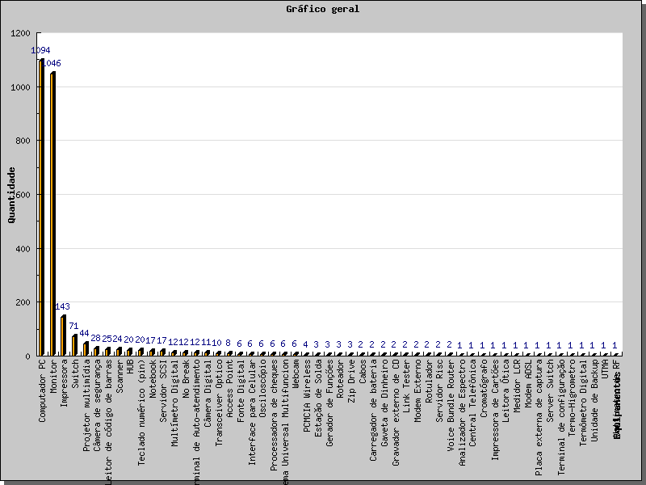

Início (Inventário -> Início)
Nessa tela é exibida uma estatística geral sobre todos os equipamentos cadastrados no OcoMon. São exibidas as informações sobre os tipos de equipamentos cadastrados, quantidade e percentual em relação ao total absoluto de equipamentos.
A partir desta tela é possível obter a listagem completa de todos equipamentos de cada tipo exibido, para isso basta clicar sobre o tipo de equipamento desejado.
Ainda na tela inicial é possível visualizar as informações de quantidade por tipo de equipamentos em forma de gráfico de barras, basta clicar no botão "Gráfico" no final da página.

Exemplo de gráfico que pode ser obtido a partir da tela inicial do módulo de inventário - versão 2.0rc3